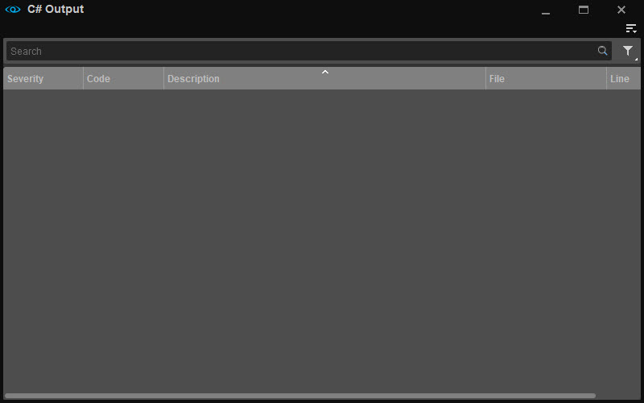

Обзор
Окно вывода C# появляется при возникновении проблемы с активом C#. Для получения дополнительной информации см. эта страница.

Меню
Доступ к меню возможен через 
Панели инструментов
Вариант | Описание | ||||
|---|---|---|---|---|---|
Настроить... | Открывает окно настройки панели инструментов, позволяющее пользователям настраивать существующие панели инструментов и/или создавать новые панели инструментов в рамках этого инструмента. | ||||
Блокировка панелей инструментов | Если этот параметр отключен, положения панелей инструментов и разделителей внутри этого инструмента можно изменить путем перетаскивания. | ||||
Проставки | Следующие параметры позволяют пользователям использовать разделители при позиционировании панелей инструментов.
Проставки Опции меню доступны только тогда, когда Панели инструментов → Заблокировать панели инструментов отключен. | ||||
| Панели инструментов | Перечисляет все стандартные и пользовательские панели инструментов (если таковые имеются), созданные для этого инструмента, что позволяет пользователям выбирать, какую панель инструментов они хотят скрыть или отобразить. |
Если у инструмента есть панель инструментов, будь то панель по умолчанию или пользовательская, приведенные выше параметры также доступны при щелчке правой кнопкой мыши в области панели инструментов (только если панель инструментов уже отображается).
Помощь
Открывает страницу документации для этого инструмента.